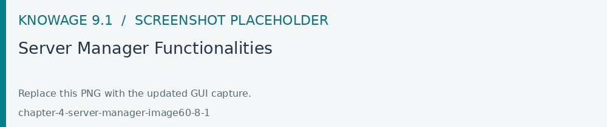
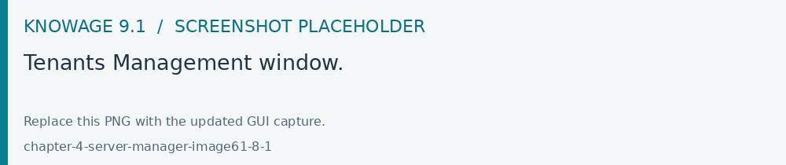
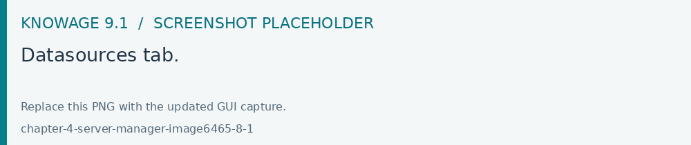
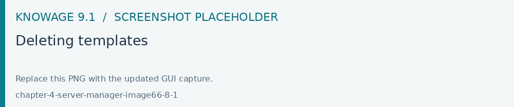
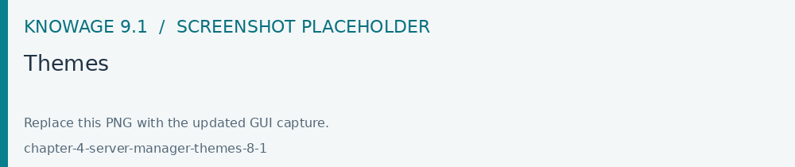
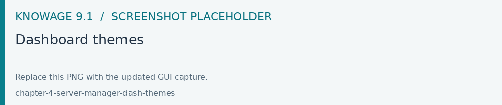
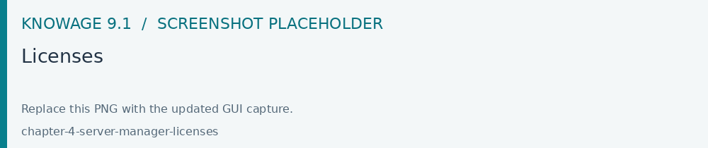
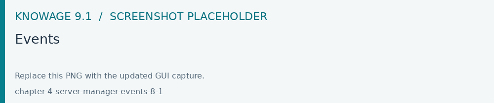

Server manager
Use the authorized Server Manager modules to maintain tenants, themes, events and template pruning. Check each change with the affected tenant and role. Configure role-specific starting pages in Home page management.
Important
Enterprise Edition only
Server Manager functionalities are only available with Knowage Enterprise Edition
All the management functionalities can be found under Server Manager of the Knowage main menu.

Fig. 636 Server Manager Functionalities
Tenants
This feature allows you to create or manage tenants. A single Knowage instance can have one or more tenants. In case of a multi-tenant environment, each tenant owns and manages its own users, documents, configuration and parameters, which are completely independent from those owned by other tenants. The Tenants functionality is only available by having the appropriate license and users must have the superadmin role.

Fig. 637 Tenants Management window.
The left side of the image above, presents the list of existing tenants with the availability of a Search box, to help users to browse throug the existing tenants. The Plus icon can be used to create a new tenant.

Fig. 638 Datasources tab.
In a single-tenant environment the admin role matches with the superadmin. In a multi-tenants environment only one user has the superadmin role for each tenant, while there can be more than one user with the admin role. Furthermore, the superadmin is the only one who can set up JNDI datasources and access the cache configuration.
Templates
Each Knowage document is associated to a template. The template defines the standard layout of a document, including specific information on its appearance and the way contents should be displayed. Templates can be encoded by hand or using Knowage Studio designers, when available. For each analytical document the history of templates is maintained. Old templates can be restored if needed. A new version is saved at each deployment, either manual or from Knowage Studio.
The Templates functionality allows the deletion of all those templates that have been created before a specific date. This kind of operation allows the administrator to clean the environment and save some space in the Knowage metadata database once a document life cycle is completed.
After inserting a date by clicking on the calendar icon, click on the funnel icon and select the documents of your interest. The Delete button deletes the templates (of the selected documents), uploaded before the specified date. If all the templates of a document come first of the specified date, the last template uploaded will be kept, so that no document is accidentally deleted. See figure below.

Fig. 639 Deleting templates
Themes
This functionality allows the creation/management of themes to be used in the css style of your documents.

Fig. 640 Themes
Dashboard Themes
This functionality allows to define themes that can be inherited by one or more widgets of a dashboard. Into the specific, when defining a new theme for each type of widget you can set properties such as Title, Borders, Padding, Shadows and Background in relation to that theme.

Fig. 641 Dashboard themes
Themes can be downloaded and imported on a new installation.
Licenses
This feature allows the management of Knowage licenses by adding, updating or removing a license.

Fig. 642 Licenses
Events
This feature allows to search through all the events (i.e. the scheduling of a report) existing on the Knowage server, specifying a range of dates and the type of event. Types of events are:
Scheduler
ETL
CommonJ
Data_Mining
See below image.

Fig. 643 Events